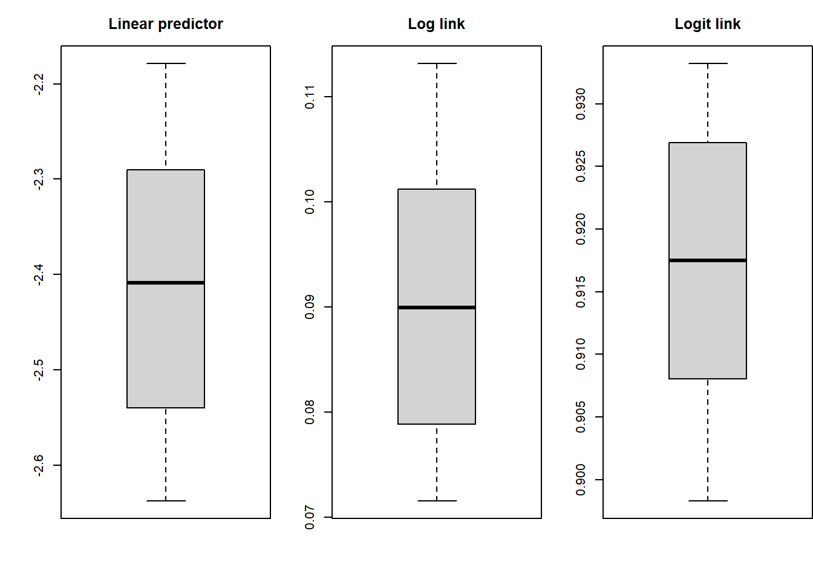
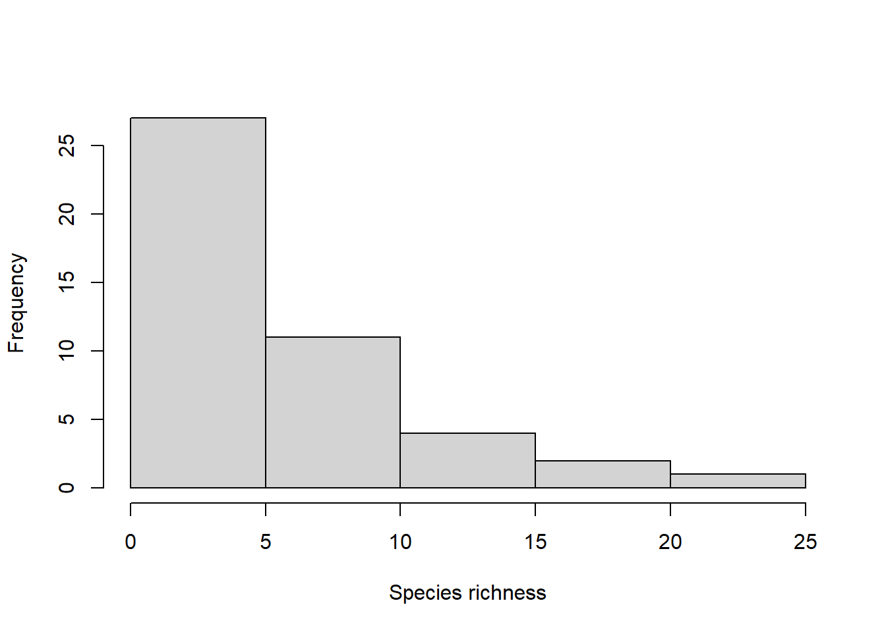
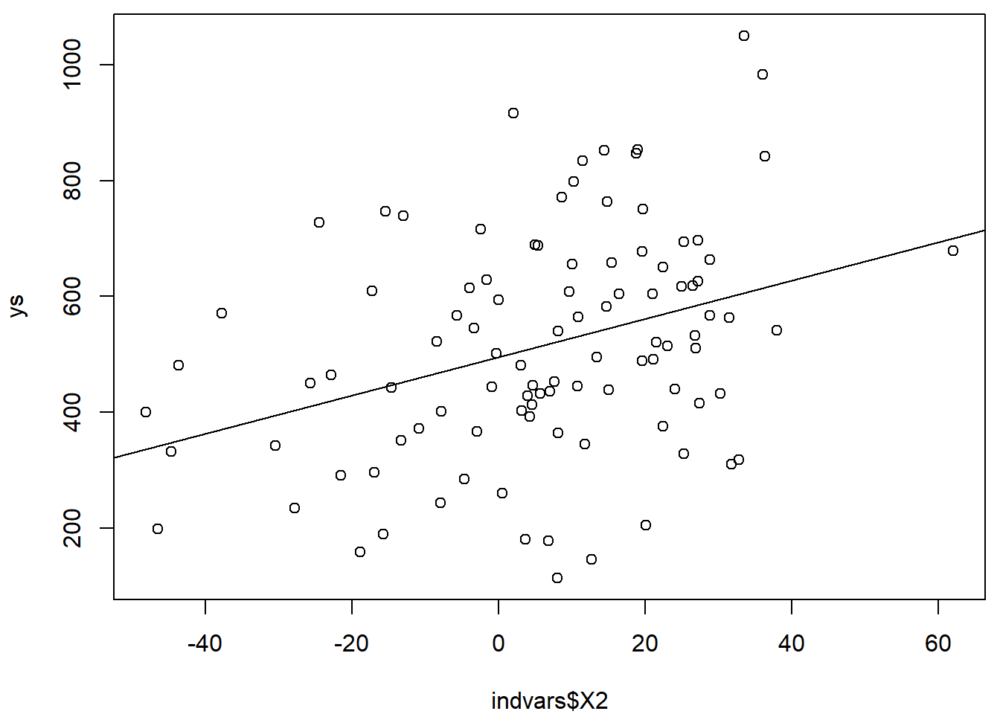

Chapter 21 Modelação
Testar um modelo linear
lm1<-lm(Survived~Age,data=titanic_train)
with(titanic_train,plot(Survived~Age))
abline(lm1)
tentar com um GLM
glm1<-glm(Survived~Age,data=titanic_train,family=binomial(link="logit"))
with(titanic_train,plot(Survived~Age))
abline(lm1)
# isto não funciona
#abline(glm1,col="blue")
#primeiro faço a predição
newages <- seq(0,90,length=300)
preds <- predict(glm1,newdata=data.frame(Age=newages),type="response")
#e agora adiciono ao plot
lines(newages,preds,col="green")
o que diz o meu modelo
summary(glm1)##
## Call:
## glm(formula = Survived ~ Age, family = binomial(link = "logit"),
## data = titanic_train)
##
## Deviance Residuals:
## Min 1Q Median 3Q Max
## -1.1488 -1.0361 -0.9544 1.3159 1.5908
##
## Coefficients:
## Estimate Std. Error z value Pr(>|z|)
## (Intercept) -0.05672 0.17358 -0.327 0.7438
## Age -0.01096 0.00533 -2.057 0.0397 *
## ---
## Signif. codes: 0 '***' 0.001 '**' 0.01 '*' 0.05 '.' 0.1 ' ' 1
##
## (Dispersion parameter for binomial family taken to be 1)
##
## Null deviance: 964.52 on 713 degrees of freedom
## Residual deviance: 960.23 on 712 degrees of freedom
## (177 observations deleted due to missingness)
## AIC: 964.23
##
## Number of Fisher Scoring iterations: 4ok, idade influencia, negativamente, a sobrevivencia, e o sexo?
glm2<-glm(Survived~Age+Sex,data=titanic_train,family=binomial(link="logit"))
with(titanic_train,plot(Survived~Age))
abline(lm1)
# isto não funciona
#abline(glm1,col="blue")
#primeiro faço a predição
newages <- seq(0,90,length=300)
predsM <- predict(glm2,newdata=data.frame(Age=newages,Sex="male"),type="response")
predsF <- predict(glm2,newdata=data.frame(Age=newages,Sex="female"),type="response")
#e agora adiciono ao plot
lines(newages,preds,col="green")
lines(newages,predsM,col="blue")
lines(newages,predsF,col="pink")
ver o model
summary(glm2)##
## Call:
## glm(formula = Survived ~ Age + Sex, family = binomial(link = "logit"),
## data = titanic_train)
##
## Deviance Residuals:
## Min 1Q Median 3Q Max
## -1.7405 -0.6885 -0.6558 0.7533 1.8989
##
## Coefficients:
## Estimate Std. Error z value Pr(>|z|)
## (Intercept) 1.277273 0.230169 5.549 2.87e-08 ***
## Age -0.005426 0.006310 -0.860 0.39
## Sexmale -2.465920 0.185384 -13.302 < 2e-16 ***
## ---
## Signif. codes: 0 '***' 0.001 '**' 0.01 '*' 0.05 '.' 0.1 ' ' 1
##
## (Dispersion parameter for binomial family taken to be 1)
##
## Null deviance: 964.52 on 713 degrees of freedom
## Residual deviance: 749.96 on 711 degrees of freedom
## (177 observations deleted due to missingness)
## AIC: 755.96
##
## Number of Fisher Scoring iterations: 4e a classe3 do bilhete?
glm3<-glm(Survived~Age+Sex+Pclass,data=titanic_train,family=binomial(link="logit"))
with(titanic_train,plot(Survived~Age))
abline(lm1)
# isto não funciona
#abline(glm1,col="blue")
#primeiro faço a predição
newages <- seq(0,90,length=300)
predsMC1 <- predict(glm3,newdata=data.frame(Age=newages,Sex="male",Pclass=1),type="response")
predsMC2 <- predict(glm3,newdata=data.frame(Age=newages,Sex="male",Pclass=2),type="response")
predsMC3 <- predict(glm3,newdata=data.frame(Age=newages,Sex="male",Pclass=3),type="response")
predsFC1 <- predict(glm3,newdata=data.frame(Age=newages,Sex="female",Pclass=1),type="response")
predsFC2 <- predict(glm3,newdata=data.frame(Age=newages,Sex="female",Pclass=2),type="response")
predsFC3 <- predict(glm3,newdata=data.frame(Age=newages,Sex="female",Pclass=3),type="response")
#e agora adiciono ao plot
lines(newages,preds,col="green")
lines(newages,predsMC1,col="blue",lwd=1)
lines(newages,predsFC1,col="pink",lwd=1)
lines(newages,predsMC2,col="blue",lwd=2)
lines(newages,predsFC2,col="pink",lwd=2)
lines(newages,predsMC3,col="blue",lwd=3)
lines(newages,predsFC3,col="pink",lwd=3)
o modelo
summary(glm3)##
## Call:
## glm(formula = Survived ~ Age + Sex + Pclass, family = binomial(link = "logit"),
## data = titanic_train)
##
## Deviance Residuals:
## Min 1Q Median 3Q Max
## -2.7270 -0.6799 -0.3947 0.6483 2.4668
##
## Coefficients:
## Estimate Std. Error z value Pr(>|z|)
## (Intercept) 5.056006 0.502128 10.069 < 2e-16 ***
## Age -0.036929 0.007628 -4.841 1.29e-06 ***
## Sexmale -2.522131 0.207283 -12.168 < 2e-16 ***
## Pclass -1.288545 0.139259 -9.253 < 2e-16 ***
## ---
## Signif. codes: 0 '***' 0.001 '**' 0.01 '*' 0.05 '.' 0.1 ' ' 1
##
## (Dispersion parameter for binomial family taken to be 1)
##
## Null deviance: 964.52 on 713 degrees of freedom
## Residual deviance: 647.29 on 710 degrees of freedom
## (177 observations deleted due to missingness)
## AIC: 655.29
##
## Number of Fisher Scoring iterations: 521.1 About multicollinearity
(this is probably best way before, in the linear model stuff… any way, I presented it here as this topic started from a student question)
#Código da aula 11
#--------------------------------------------------------
# When good models go wrong as
# multicollinearity kicks in
#--------------------------------------------------------
library(MASS)
set.seed(1234)
n=100
means <- c(2,4,6,8,10,12)
ncovs=(36-6)/2
covs<- rnorm(ncovs,mean=10,sd=2)
varcovars=matrix(NA,6,6)
varcovars[lower.tri(varcovars)]=covs
varcovars=t(varcovars)
varcovars[lower.tri(varcovars)]=covs
diag(varcovars)=means
varcovars=t(varcovars) %*% varcovars
indvars <- mvrnorm(n = n, mu=means, Sigma=varcovars)
# we can see that we have high correlations
#across the board in explanatory variables
indvars=as.data.frame(indvars)
names(indvars)=paste0("X",1:6)
head(indvars)## X1 X2 X3 X4 X5 X6
## 1 9.541304 4.656261 3.519952 6.511551 17.806161 14.773197
## 2 3.994445 11.434166 20.327380 24.241666 15.890631 31.525666
## 3 18.024736 24.941978 21.872642 26.629010 34.570050 35.874779
## 4 24.192031 24.081062 21.521784 24.605110 27.886290 31.084587
## 5 -45.216392 -46.471634 -42.049067 -46.874143 -43.935034 -51.421911
## 6 -1.530172 -2.414988 6.496899 5.861754 9.758315 6.201106round(cor(indvars),2)## X1 X2 X3 X4 X5 X6
## X1 1.00 0.91 0.83 0.84 0.95 0.88
## X2 0.91 1.00 0.91 0.95 0.96 0.97
## X3 0.83 0.91 1.00 0.98 0.92 0.98
## X4 0.84 0.95 0.98 1.00 0.93 0.98
## X5 0.95 0.96 0.92 0.93 1.00 0.96
## X6 0.88 0.97 0.98 0.98 0.96 1.00ys <-510+4*indvars$X1+rnorm(n,mean=0,sd=200)
par(mfrow=c(1,1),mar=c(4,4,0.5,0.5))
plot(ys~indvars$X1)
lmX1 <- lm(ys~indvars$X1)
abline(lmX1)
summary(lmX1)##
## Call:
## lm(formula = ys ~ indvars$X1)
##
## Residuals:
## Min 1Q Median 3Q Max
## -413.08 -127.50 -7.59 125.10 463.84
##
## Coefficients:
## Estimate Std. Error t value Pr(>|t|)
## (Intercept) 496.7416 19.0775 26.038 < 2e-16 ***
## indvars$X1 3.2745 0.8468 3.867 0.000198 ***
## ---
## Signif. codes: 0 '***' 0.001 '**' 0.01 '*' 0.05 '.' 0.1 ' ' 1
##
## Residual standard error: 184.1 on 98 degrees of freedom
## Multiple R-squared: 0.1324, Adjusted R-squared: 0.1235
## F-statistic: 14.95 on 1 and 98 DF, p-value: 0.0001984plot(ys~indvars$X2)
lmX2 <- lm(ys~indvars$X2)
abline(lmX2)
summary(lmX2)##
## Call:
## lm(formula = ys ~ indvars$X2)
##
## Residuals:
## Min 1Q Median 3Q Max
## -407.70 -108.41 -21.64 115.86 444.46
##
## Coefficients:
## Estimate Std. Error t value Pr(>|t|)
## (Intercept) 495.2459 19.4084 25.517 < 2e-16 ***
## indvars$X2 3.2979 0.9047 3.645 0.00043 ***
## ---
## Signif. codes: 0 '***' 0.001 '**' 0.01 '*' 0.05 '.' 0.1 ' ' 1
##
## Residual standard error: 185.5 on 98 degrees of freedom
## Multiple R-squared: 0.1194, Adjusted R-squared: 0.1104
## F-statistic: 13.29 on 1 and 98 DF, p-value: 0.00043#one error type I + 1 error type 2
lmX1X2 <- lm(ys~indvars$X1+indvars$X2)
summary(lmX1X2)##
## Call:
## lm(formula = ys ~ indvars$X1 + indvars$X2)
##
## Residuals:
## Min 1Q Median 3Q Max
## -412.18 -127.02 -9.52 122.55 457.28
##
## Coefficients:
## Estimate Std. Error t value Pr(>|t|)
## (Intercept) 495.8151 19.3577 25.613 <2e-16 ***
## indvars$X1 2.6245 2.0955 1.252 0.213
## indvars$X2 0.7542 2.2222 0.339 0.735
## ---
## Signif. codes: 0 '***' 0.001 '**' 0.01 '*' 0.05 '.' 0.1 ' ' 1
##
## Residual standard error: 184.9 on 97 degrees of freedom
## Multiple R-squared: 0.1334, Adjusted R-squared: 0.1155
## F-statistic: 7.466 on 2 and 97 DF, p-value: 0.000964lmX3 <- lm(ys~indvars$X3)
summary(lmX3)##
## Call:
## lm(formula = ys ~ indvars$X3)
##
## Residuals:
## Min 1Q Median 3Q Max
## -411.08 -117.64 -20.46 118.95 492.16
##
## Coefficients:
## Estimate Std. Error t value Pr(>|t|)
## (Intercept) 494.6520 20.6863 23.91 < 2e-16 ***
## indvars$X3 2.4810 0.9257 2.68 0.00864 **
## ---
## Signif. codes: 0 '***' 0.001 '**' 0.01 '*' 0.05 '.' 0.1 ' ' 1
##
## Residual standard error: 190.8 on 98 degrees of freedom
## Multiple R-squared: 0.06829, Adjusted R-squared: 0.05878
## F-statistic: 7.183 on 1 and 98 DF, p-value: 0.008637lmX1X3 <- lm(ys~indvars$X1+indvars$X3)
summary(lmX1X3)##
## Call:
## lm(formula = ys ~ indvars$X1 + indvars$X3)
##
## Residuals:
## Min 1Q Median 3Q Max
## -411.85 -132.49 -3.33 114.58 463.85
##
## Coefficients:
## Estimate Std. Error t value Pr(>|t|)
## (Intercept) 501.703 20.162 24.884 < 2e-16 ***
## indvars$X1 4.253 1.522 2.795 0.00626 **
## indvars$X3 -1.243 1.605 -0.774 0.44056
## ---
## Signif. codes: 0 '***' 0.001 '**' 0.01 '*' 0.05 '.' 0.1 ' ' 1
##
## Residual standard error: 184.5 on 97 degrees of freedom
## Multiple R-squared: 0.1377, Adjusted R-squared: 0.1199
## F-statistic: 7.745 on 2 and 97 DF, p-value: 0.0007572lmX4 <- lm(ys~indvars$X4)
summary(lmX4)##
## Call:
## lm(formula = ys ~ indvars$X4)
##
## Residuals:
## Min 1Q Median 3Q Max
## -420.10 -113.31 -25.54 127.44 487.20
##
## Coefficients:
## Estimate Std. Error t value Pr(>|t|)
## (Intercept) 488.3939 20.9613 23.300 < 2e-16 ***
## indvars$X4 2.5972 0.8522 3.048 0.00296 **
## ---
## Signif. codes: 0 '***' 0.001 '**' 0.01 '*' 0.05 '.' 0.1 ' ' 1
##
## Residual standard error: 188.9 on 98 degrees of freedom
## Multiple R-squared: 0.08658, Adjusted R-squared: 0.07726
## F-statistic: 9.289 on 1 and 98 DF, p-value: 0.002964lmX1X4 <- lm(ys~indvars$X1+indvars$X4)
summary(lmX1X4)##
## Call:
## lm(formula = ys ~ indvars$X1 + indvars$X4)
##
## Residuals:
## Min 1Q Median 3Q Max
## -411.69 -130.48 -4.08 126.22 463.73
##
## Coefficients:
## Estimate Std. Error t value Pr(>|t|)
## (Intercept) 498.6500 21.0183 23.725 <2e-16 ***
## indvars$X1 3.5662 1.5681 2.274 0.0252 *
## indvars$X4 -0.3406 1.5379 -0.221 0.8252
## ---
## Signif. codes: 0 '***' 0.001 '**' 0.01 '*' 0.05 '.' 0.1 ' ' 1
##
## Residual standard error: 185 on 97 degrees of freedom
## Multiple R-squared: 0.1328, Adjusted R-squared: 0.1149
## F-statistic: 7.428 on 2 and 97 DF, p-value: 0.0009964lmX5 <- lm(ys~indvars$X5)
summary(lmX5)##
## Call:
## lm(formula = ys ~ indvars$X5)
##
## Residuals:
## Min 1Q Median 3Q Max
## -414.19 -123.28 -16.99 109.47 468.13
##
## Coefficients:
## Estimate Std. Error t value Pr(>|t|)
## (Intercept) 475.939 21.837 21.80 < 2e-16 ***
## indvars$X5 3.094 0.879 3.52 0.000657 ***
## ---
## Signif. codes: 0 '***' 0.001 '**' 0.01 '*' 0.05 '.' 0.1 ' ' 1
##
## Residual standard error: 186.2 on 98 degrees of freedom
## Multiple R-squared: 0.1122, Adjusted R-squared: 0.1032
## F-statistic: 12.39 on 1 and 98 DF, p-value: 0.0006565lmX1X5 <- lm(ys~indvars$X1+indvars$X5)
summary(lmX1X5)##
## Call:
## lm(formula = ys ~ indvars$X1 + indvars$X5)
##
## Residuals:
## Min 1Q Median 3Q Max
## -412.27 -126.69 -8.23 126.84 465.30
##
## Coefficients:
## Estimate Std. Error t value Pr(>|t|)
## (Intercept) 504.280 28.412 17.749 <2e-16 ***
## indvars$X1 4.204 2.723 1.544 0.126
## indvars$X5 -1.004 2.794 -0.359 0.720
## ---
## Signif. codes: 0 '***' 0.001 '**' 0.01 '*' 0.05 '.' 0.1 ' ' 1
##
## Residual standard error: 184.9 on 97 degrees of freedom
## Multiple R-squared: 0.1335, Adjusted R-squared: 0.1157
## F-statistic: 7.474 on 2 and 97 DF, p-value: 0.0009573lmX6 <- lm(ys~indvars$X6)
summary(lmX6)##
## Call:
## lm(formula = ys ~ indvars$X6)
##
## Residuals:
## Min 1Q Median 3Q Max
## -413.01 -113.67 -18.88 118.72 465.72
##
## Coefficients:
## Estimate Std. Error t value Pr(>|t|)
## (Intercept) 478.6605 22.1541 21.606 < 2e-16 ***
## indvars$X6 2.4758 0.7745 3.197 0.00187 **
## ---
## Signif. codes: 0 '***' 0.001 '**' 0.01 '*' 0.05 '.' 0.1 ' ' 1
##
## Residual standard error: 188.1 on 98 degrees of freedom
## Multiple R-squared: 0.09443, Adjusted R-squared: 0.08519
## F-statistic: 10.22 on 1 and 98 DF, p-value: 0.001871lmX1X6 <- lm(ys~indvars$X1+indvars$X6)
summary(lmX1X6)##
## Call:
## lm(formula = ys ~ indvars$X1 + indvars$X6)
##
## Residuals:
## Min 1Q Median 3Q Max
## -412.53 -130.17 -3.85 125.12 467.06
##
## Coefficients:
## Estimate Std. Error t value Pr(>|t|)
## (Intercept) 501.3742 24.3612 20.581 <2e-16 ***
## indvars$X1 3.7658 1.8074 2.084 0.0398 *
## indvars$X6 -0.4985 1.6180 -0.308 0.7587
## ---
## Signif. codes: 0 '***' 0.001 '**' 0.01 '*' 0.05 '.' 0.1 ' ' 1
##
## Residual standard error: 185 on 97 degrees of freedom
## Multiple R-squared: 0.1332, Adjusted R-squared: 0.1154
## F-statistic: 7.455 on 2 and 97 DF, p-value: 0.0009738AIC(lmX1,lmX2,lmX3,lmX4,lmX5,lmX6,lmX1X2,lmX1X3,lmX1X4,lmX1X5,lmX1X6)## df AIC
## lmX1 3 1330.863
## lmX2 3 1332.348
## lmX3 3 1337.989
## lmX4 3 1336.007
## lmX5 3 1333.157
## lmX6 3 1335.143
## lmX1X2 4 1332.744
## lmX1X3 4 1332.246
## lmX1X4 4 1332.812
## lmX1X5 4 1332.729
## lmX1X6 4 1332.765The fundamental idea is that most of these models are equally good for prediction. But they might give you the complete wrong picture for explanation. Never confuse the two. Optimal modelling strategies and choices might require know what is more important.